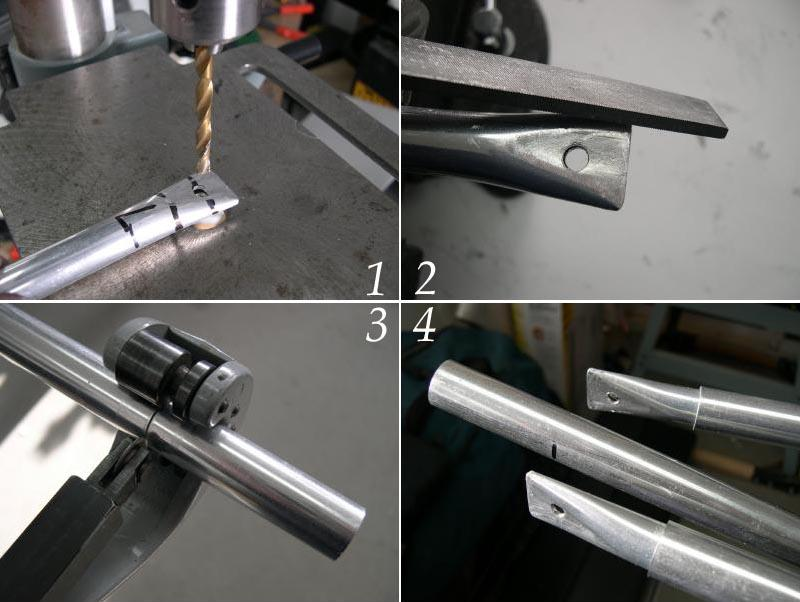

| Stem / Stern Inserts (4 of 5) | Menu Previous Page Next Page |
|
 Drilling The Flattened Ends - (1 and 2) Center , mark , and drill for the stainless 10-24 machine screws. The inserts can be drilled with a hand drill with the tubing still on the frame, or removed and drilled on a drill press. Use a file to round and smooth out the ends. Cutting and fitting - ( 3 and 4) Cut the inserts to the required length. On the Sea Ranger, they are 10" to 12". Slide the inserts inside the 3/4" stringer for positioning and riveting |
|